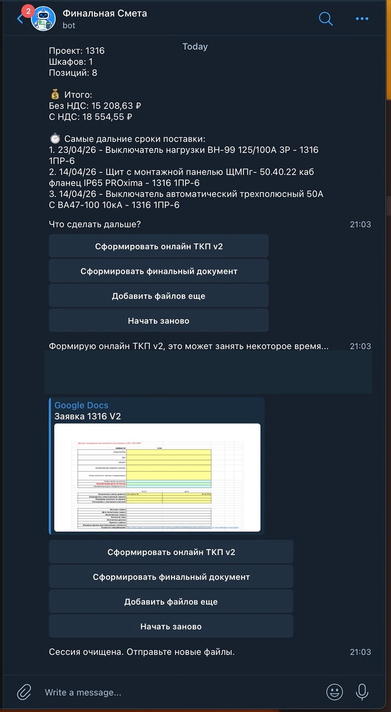

@EMPR_smetaBot
Справка для пользователей и администраторов: как отправлять сметы, получать финальный Excel, пересчитывать готовый файл, заменять позиции, проверять проблемные суммы и создавать онлайн-ТКП.
1. Быстрый старт
- Откройте @EMPR_smetaBot и нажмите /start.
- Отправьте Excel-файл или ZIP-архив как документ.
- Дождитесь обработки.
- Получите файл final_result_YYYY-MM-DD_HH-MM-SS.xlsx.
- Проверьте результат. Если нужны ручные правки, внесите их на листе Сметы и отправьте файл боту повторно.
Поддерживаются файлы .xls, .xlsx, .xlsm и ZIP-архивы с несколькими Excel-сметами.

2. Что внутри final_result
- Сметы
-
Основной лист с позициями по шкафам. Его можно проверять и аккуратно редактировать.

Пример основного листа Сметы с блоками шкафов. - Итоги по шкафам
- Суммы без НДС и с НДС по каждому шкафу. В строке Общий итог есть примечание, что сумма включает только стоимость шкафов за одну единицу. При пересчёте формулы ссылаются на актуальные итоговые строки листа Сметы.
- Сроки поставки
- Топ самых дальних сроков и список строк без корректного срока.
- Аналитика производителей
-
Сводка по производителям, суммам и долям.

Пример аналитики производителей: KPI, таблица, диаграмма и расшифровка. - Закупочная ведомость
- Статичная таблица для закупки с агрегированными позициями.
3. Контроль сумм
В финальной смете бот отдельно показывает позиции, где невозможно надёжно посчитать стоимость.
- Проверяются суммы на листе Сметы в колонках J и K.
- Некорректными считаются пустые значения, нули, строковые нули вроде 0.00 и текст вместо суммы.
- Текст вроде нет цены, уточнить, abc или - попадает в контрольную таблицу.
- Числовой текст вроде 120.50 или 120,50 считается корректным.
- На листе Итоги по шкафам появляется таблица Позиции без указания корректной стоимости со ссылками на конкретные строки листа Сметы.
- При повторном пересчёте таблица строится заново и не дублируется.
4. Закупочная ведомость
- Одинаковые товары объединяются по названию, производителю, артикулу, единице измерения и ценам.
- Количество суммируется.
- Разный срок поставки не разделяет одинаковые позиции.
- В итоговой строке объединённой позиции остаётся самый дальний срок поставки.
- Поля Поставщик и Статус закупки оставлены для ручного заполнения.
Ведомость статичная: если данные на листе Сметы изменились, нужно отправить final_result боту и нажать Пересчитать финальную смету.

5. Пересчёт финальной сметы
- Бот распознаёт готовый final_result по структуре книги.
- После повторной загрузки файла появляется кнопка Пересчитать финальную смету.
- Источник данных для пересчёта — актуальный лист Сметы.
- Лист Сметы сохраняется, а производные листы пересоздаются.
- Итоги по шкафам, сроки поставки, аналитика и закупочная ведомость строятся по актуальным строкам.
6. Замена позиций из финальной сметы
Функция нужна, когда уже есть готовый final_result.xlsx, но в нём нужно массово заменить, удалить или добавить товарные позиции без ручного редактирования каждой строки в Excel.
Последовательность работы
- Откройте @EMPR_smetaBot.
- Отправьте готовый файл final_result.xlsx как документ. Это может быть файл, который бот только что сформировал, или ранее сохранённый итоговый файл.
- Дождитесь, пока бот распознает файл как финальную смету и покажет кнопки действий.
- Нажмите Сформировать шаблон замен.
- Скачайте полученный файл replacement_template_YYYY-MM-DD_HH-MM-SS.xlsx.
- Откройте шаблон в Excel и заполните лист Замены.
- Вернитесь в Telegram и нажмите Заменить позиции.
- Отправьте заполненный файл замен как документ.
- Проверьте preview: бот покажет, какие строки будут заменены, удалены или добавлены, какие шкафы затронуты и есть ли ошибки.
- Если ошибок нет, нажмите Применить. Если есть дубли при добавлении, выберите один из вариантов обработки дублей.
- Получите новый файл final_result_replaced_YYYY-MM-DD_HH-MM-SS.xlsx. Исходный final_result.xlsx при этом не меняется.
- Проверьте листы Сметы, Итоги по шкафам, Закупочная ведомость и Журнал замен.
Какие листы есть в шаблоне
- Замены
- Основной лист. Здесь пользователь вводит правила: что заменить, удалить, добавить или пропустить.
- Позиции сметы
- Справочный список текущих позиций из финальной сметы. Его удобно использовать, чтобы скопировать старый код товара и точное имя шкафа.
- Инструкция
- Краткая памятка внутри Excel-файла.
Колонки листа "Замены"
| Колонка | Что вводить | Когда обязательно |
|---|---|---|
| Действие | replace, delete, add или skip. | Всегда, если строка должна обрабатываться. |
| Старый код товара | Код существующей позиции из листа Сметы. Можно скопировать с листа Позиции сметы. | Для replace и delete. |
| Область применения | all для всех шкафов или точное имя одного шкафа. Имя шкафа должно совпадать с названием из финальной сметы. | Для add. Для replace и delete можно использовать, если правило нужно применить только к одному шкафу. |
| Новый код товара | Код новой позиции. | Для replace и add. |
| Имя товара, Производитель, Артикул | Данные новой позиции, которые попадут в итоговую смету. | Для replace и add. |
| Кол-во | Число больше нуля. Например 1, 2, 3.5. | Только для add. Для replace игнорируется: количество сохраняется из исходной сметы. |
| Ед.изм., Цена без НДС, Цена с НДС, Срок поставки, Штрих-код | Характеристики новой позиции. | Для replace и add. |
| Сумма без НДС, Сумма с НДС | Справочные поля. Их можно оставить пустыми или вставить из прайса. | Не обязательны. Бот не использует эти значения: итоговые суммы пересчитываются формулами. |
| Комментарий | Любая заметка для себя или для журнала замен. | Не обязательно. |
Действие replace: заменить позицию
Используйте replace, когда нужно заменить одну существующую позицию на другую.
- В Действие укажите replace.
- В Старый код товара укажите код позиции, которую нужно заменить.
- Если замена нужна только в одном шкафу, укажите точное имя шкафа в Область применения. Если область оставить пустой, правило ищет подходящие строки по всей финальной смете.
- Заполните Новый код товара и данные новой позиции.
- Кол-во для replace не вводите или оставьте справочным: бот сохранит количество из исходной строки сметы.
Пример: старый автомат с кодом OLD-001 нужно заменить на новый автомат NEW-001. В строке укажите replace, старый код, новый код, название, производителя, артикул, единицу измерения, цены и срок поставки.
Действие delete: удалить позицию
Используйте delete, когда позицию нужно убрать из финальной сметы.
- В Действие укажите delete.
- В Старый код товара укажите код удаляемой позиции.
- Если удаление нужно только в одном шкафу, укажите точное имя шкафа в Область применения.
- Поля новой позиции можно оставить пустыми.
Бот не применит удаление, если из-за него шкаф останется совсем без товарных строк и в этот шкаф не добавляется новая позиция.
Действие add: добавить новую позицию
Используйте add, когда нужно добавить новую строку в один шкаф или во все шкафы финальной сметы.
- В Действие укажите add.
- Старый код товара оставьте пустым.
- В Область применения укажите all или точное имя одного шкафа.
- Заполните Новый код товара и данные новой позиции.
- В Кол-во обязательно укажите число больше нуля.
Если указано all, позиция добавляется в каждый шкаф отдельно. Например, add для знака электробезопасности с количеством 1 и областью all добавит по одной штуке в каждый шкаф.
Действие skip: пропустить строку
Используйте skip, если хотите временно оставить строку в шаблоне, но не применять её.
- В Действие укажите skip.
- Остальные поля можно не очищать: бот не применит эту строку.
Preview перед применением
После загрузки файла замен бот сначала показывает preview и ничего не меняет в Excel автоматически. В preview видно:
- сколько правил найдено;
- сколько правил активных и сколько пропущено;
- сколько строк будет заменено, удалено и добавлено;
- какие шкафы будут затронуты;
- какие есть ошибки или конфликты;
- есть ли дубли при добавлении новых позиций.
Если preview содержит ошибки, кнопка применения не показывается. Исправьте файл замен и отправьте его повторно или нажмите Отменить.
Что делать при дублях add
Если новая позиция уже есть в одном или нескольких шкафах, бот не применяет правило молча. Он покажет конфликт и предложит выбор:
- Пропустить шкафы, где дубль уже есть
- Бот добавит позицию только в шкафы без такого кода. Для шкафов с дублем в Журнал замен будет статус skipped_duplicate.
- Добавить всё равно дублем
- Бот добавит позицию даже туда, где такой код уже есть. Для таких строк в журнале будет статус applied_duplicate.
- Отменить
- Бот ничего не меняет и сбрасывает сценарий замены.
После применения
- Бот отправляет новый файл final_result_replaced_YYYY-MM-DD_HH-MM-SS.xlsx.
- Исходный файл, от которого строилась замена, не изменяется.
- Лист Журнал замен показывает, какие правила применились, какие были пропущены и какие строки обработаны как дубли.
- Производные листы пересобираются по новой смете: Итоги по шкафам, Сроки поставки, Аналитика производителей, Закупочная ведомость.
- Следующие действия в Telegram будут работать уже от нового файла, который бот только что отправил.
7. Онлайн-ТКП
- Сформировать форму онлайн ТКП?
- Основная кнопка для создания Google Sheets ТКП по рабочему шаблону.
- Сформировать онлайн ТКП v2
- Тестовая версия формы. Кнопка видна только когда режим v2 включён администратором.
- После пересчёта
- Онлайн-ТКП создаётся из нового пересчитанного final_result.
- Если Google Sheets временно недоступен
- Бот показывает безопасное сообщение об ошибке и, если локальный итоговый Excel уже доступен, дополнительно отправляет final_result как документ.

8. Admin-команды
Эти команды доступны только администраторам. Обычный пользователь не получает административную информацию.
- /help
- Показывает краткую памятку по admin-командам и безопасный статус Google OAuth token-файла только по metadata/stat, без чтения token JSON.
- /newtoken
- Возвращает готовую SSH-команду для ручного обновления Google OAuth token. Бот сам не запускает OAuth flow и не пересылает token/secrets.
- /reestr
- Отправляет кликабельную ссылку на реестр онлайн-ТКП без вывода длинного URL в сообщении.
9. Установка на VPS
Для нового VPS в репозитории RudlisMe/empr-smeta-bot подготовлен guarded installer deploy/install_new_vps.sh. Скрипт рассчитан на запуск на новом сервере от root и сначала должен проверяться через --dry-run.
- Скрипт создаёт пользователя emprbot, рабочую папку /opt/empr-smeta-bot, .venv и systemd service empr-smeta-bot.service.
- GitHub SSH настраивается через ssh.github.com:443; private deploy key не печатается, показывается только public key.
- Перед включением service скрипт запускает тесты. В real mode его нужно проверять только на новом или disposable VPS.
- Installer пока не считается production-verified: stable tag для него не создавался.
- GOOGLE_TKP_REGISTRY_URL
- Опциональная прямая ссылка для /reestr. Если пусто, бот строит fallback из GOOGLE_TKP_REGISTRY_SPREADSHEET_ID.
- GOOGLE_TKP_ENABLE_QR_FORMULA
- Опциональный флаг QR-формулы в Google TKP. По умолчанию оставляйте false.
- OAUTH_REAUTH_SSH_HOST
- На новом VPS должен указывать на новый public IP/DNS, а не копироваться из старого .env.
10. Безопасные правки
Можно
- менять количество, цены, сроки поставки;
- уточнять производителя, артикул, код товара и название позиции;
- добавлять товарные строки внутри существующего блока шкафа;
- после правок отправлять файл боту на пересчёт.
Не стоит
- переименовывать лист Сметы;
- удалять строки Примечание: и Всего;
- ломать заголовки колонок;
- переносить товары вне блока шкафа;
- использовать производные листы как источник для пересчёта.
11. FAQ
- Бот не принимает файл
- Проверьте расширение и отправьте файл как документ.
- Бот предупреждает о дублях
- Проверьте повторяющиеся сметы по названию шкафа. Если дубли ожидаемые, продолжите обработку с дублями.
- Не появляется пересчёт
- Убедитесь, что отправлен готовый final_result со структурой листов бота.
- Нет кнопок "Сформировать шаблон замен" и "Заменить позиции"
- Эти кнопки появляются только после загрузки валидного final_result.xlsx или после формирования финальной сметы ботом.
- После ошибки в файле замен можно отправить исправленный файл повторно?
- Да. Если preview показал ошибки, исправьте Excel-файл замен и отправьте его снова. Нажимать Заменить позиции повторно не нужно.
- Можно добавить позицию сразу в несколько выбранных шкафов?
- Сейчас поддерживается all или одно точное имя шкафа. Несколько шкафов через запятую не поддерживаются.
- Нет кнопки онлайн-ТКП
- Сначала сформируйте final_result или отправьте ранее сформированный final_result боту повторно.
- Нет кнопки v2
- Это нормально: v2 доступна только в тестовом режиме.
- В итогах появилась таблица проблемных сумм
- Проверьте строки на листе Сметы, куда ведут ссылки. Обычно там пустая, нулевая или текстовая сумма в колонках J/K.
- Онлайн-ТКП не создалась, но пришёл Excel
- Это штатный fallback: локальный final_result доступен, а создание Google Sheets ТКП можно повторить позже.